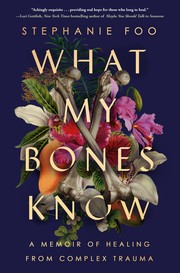

What My Bones Know: A Memoir of Healing from Complex Trauma
Book·Stephanie Foo, 2022·我的骨头知道

A personal memoir of complex trauma and the search for help. It is suited to entering the subject through experience.
- Author
- Stephanie Foo
- Year
- 2022
- Difficulty
- Beginner
- Kind
- Biography
- Schools
- Trauma Studies and PTSD
Editions
- English edition What My Bones Know: A Memoir of Healing from Complex Trauma Stephanie Foo · Ballantine Books, first edition · 2022 Open Library ↗